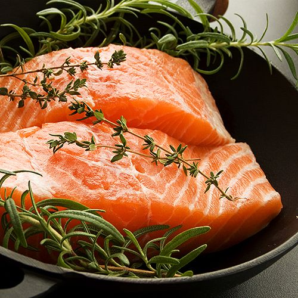
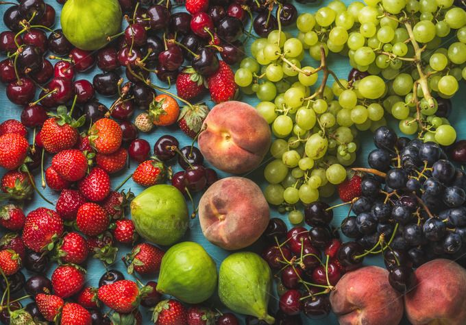
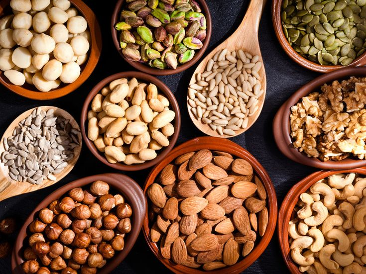
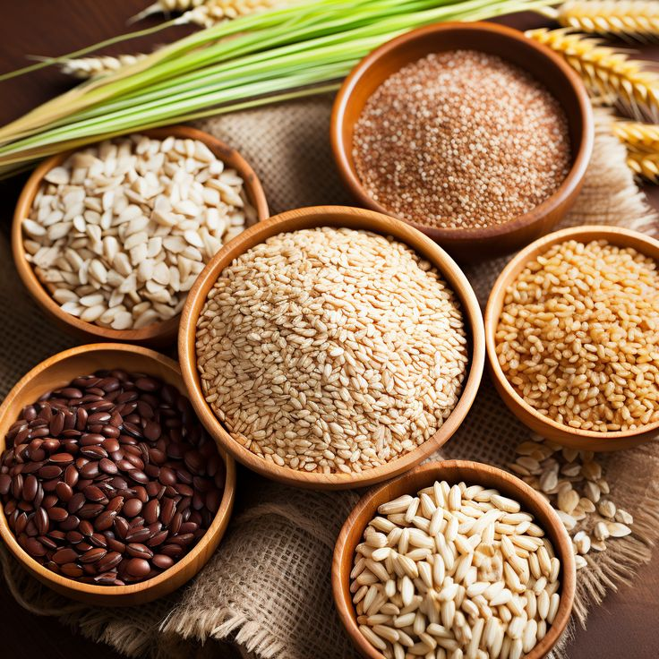
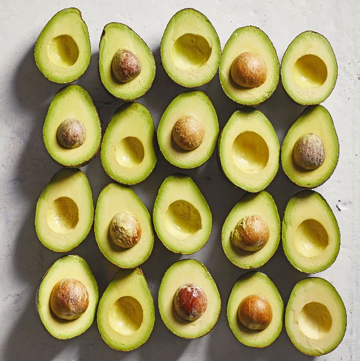
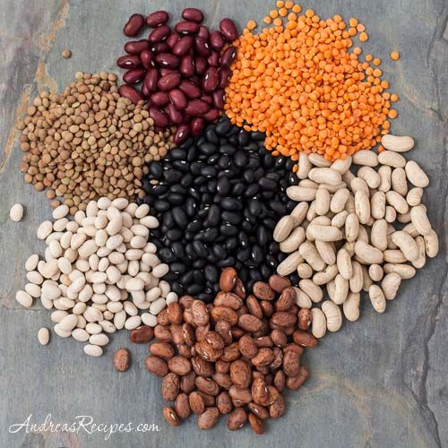
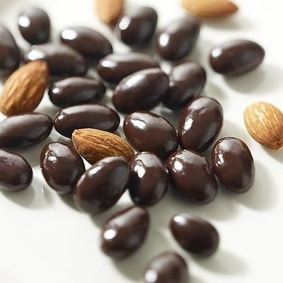
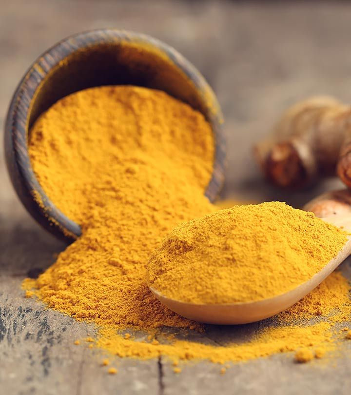

Fatty Fish
Include fish like salmon, trout, and sardines in your diet. They are rich in omega-3 fatty acids, which are important for brain health.
Berries
Blueberries, strawberries, and other berries contain antioxidants that may help improve brain function.
Nuts and Seeds
Walnuts, almonds, flaxseeds, and chia seeds are good sources of vitamin E, which has been associated with less cognitive decline as you age.
Leafy Green Vegetables

Spinach, kale, and other leafy greens are rich in vitamins and minerals that are good for overall brain health.
Whole Grains
Whole grains like oats, brown rice, and whole wheat bread provide a steady supply of energy for the brain.
Avocados
Rich in healthy fats and vitamin E, avocados are good for brain health.
Beans and Legumes
These are good sources of complex carbohydrates, which provide a steady supply of glucose to the brain.
Dark Chocolate
Contains flavonoids, caffeine, and antioxidants, which may improve memory, focus, and mood.
Turmeric
Contains curcumin, which has anti-inflammatory and antioxidant properties that may benefit the brain.